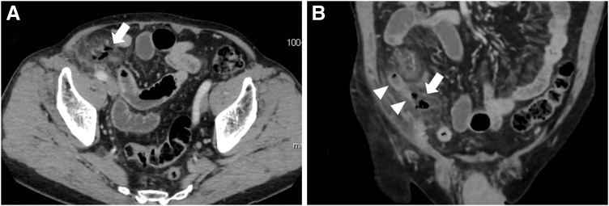
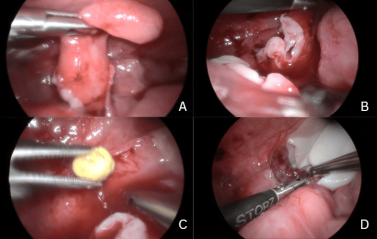
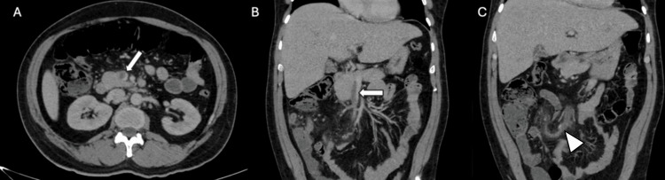

Аппендицит. Осложнения острого аппендицита
Анатомия червеобразного отростка и варианты его расположения
Червеобразный отросток (appendix vermiformis) — полая тонкостенная трубка, отходящая от заднемедиальной стенки слепой кишки на 2,5 см ниже илеоцекального клапана, в точке схождения трёх лент продольных мышц, служащих ориентиром на операции. Диаметр отростка составляет 6—8 мм, длина — от 1 до 30—40 см (в среднем 5—10 см). Обычно покрыт брюшиной со всех сторон и имеет собственную брыжейку с a. appendicularis, сопровождающими венами и лимфатическими сосудами.[Кузин, с. 622]
Точка максимальной боли определяется положением верхушки отростка: её основание фиксировано, а верхушка может располагаться в любой точке окружности, что обусловливает разнообразие клинической картины.[Кузин, с. 622]
Выделяют варианты расположения отростка: Нисходящее, или тазовое (15—20 % случаев) — верхушка опускается в малый таз (к мочевому пузырю, прямой кишке, матке и придаткам), боль в надлобковой области сопровождается дизурией и тенезмами. Медиальное (7—9 %) — лежит над или под петлями подвздошной кишки, боль разлитая. Латеральное (3—5 %) — вдоль наружной стенки слепой кишки к париетальной брюшине бокового канала. Восходящее, или подпечёночное (0,4—2,0 %) — верхушка достигает нижней поверхности правой доли печени и дна жёлчного пузыря, давая боль в правом подреберье. Ретроцекальное (12—15 %) — позади слепой кишки.[Кузин, с. 622]
При ретроцекальном расположении отросток отделён слепой кишкой, симптомы раздражения брюшины выражены слабо, а боль иррадиирует в поясницу и правую ногу. Положение бывает интраперитонеальным (9—10 %), ретроперитонеальным (3—5 %) и интрамуральным — в стенке слепой кишки (0,1 %). При ретроперитонеальном варианте воспаление распространяется на забрюшинную клетчатку и мочеточник, поэтому у 25 % больных в моче выявляют эритроциты и лейкоциты.[Кузин, с. 640]
Расположение отростка определяет операционный доступ: при типичном — косопеременный разрез в правой подвздошной области; при тазовом расположении ведут работу глубоко в малом тазу, при подпечёночном разрез смещают вверх, при ретроцекальном — расширяют доступ для мобилизации слепой кишки.[Кузин, с. 622]
Этиология, патогенез и классификация острого аппендицита
В основе острого аппендицита лежат обтурация просвета отростка (феколитами, инородными телами, гельминтами, гиперплазией лимфоидных фолликулов) и нарушение кровообращения его стенки. Секреция слизи в замкнутом пространстве объёмом 0,1—0,2 мл повышает внутриполостное давление, перекрывая сначала венозный отток, затем артериальный приток. Неокклюзионный путь вызван первичной ишемией стенки (например, при стенозе сосудов).
Ишемия и размножение микрофлоры приводят к изъязвлению слизистой (первичный аффект Ашоффа). Лимфоидные фолликулы реагируют выбросом макрофагов, лимфоцитов и медиаторов (IL-1, IL-6, TNF, фактор активации тромбоцитов). Избыток провоспалительных интерлейкинов распространяет деструкцию на всю толщу стенки. При некрозе мышечного слоя, особенно в сочетании с феколитами, у 50 % больных происходит перфорация отростка с развитием перитонита или периаппендикулярного абсцесса.[Кузин, с. 625]
| Форма | Макроскопическая картина | Микроскопическая картина | Характерные особенности |
|---|---|---|---|
| Катаральный (простой, поверхностный) | Отросток незначительно увеличен, отёчен; серозная оболочка тусклая, гиперемирована | Очаги гнойного воспаления с дефектом слизистой (первичный аффект Ашоффа) или поверхностное серозно-гнойное воспаление | Изменения неспецифичны; лапароскопически неотличим от вторичных изменений при аднексите, мезадените |
| Флегмонозный | Отросток резко увеличен; серозная оболочка тёмно-бурая, с геморрагиями и фибрином; в просвете — гной | Диффузная лейкоцитарная инфильтрация стенки; микроабсцессы в фолликулах; некроз слизистой | Скопление гноя в полости отростка — эмпиема; брыжейка инфильтрирована и гиперемирована |
| Гангренозный | Отросток резко утолщён, зеленовато-чёрный, пропитан кровью, стенка дряблая, истончена; на серозной оболочке — кровоизлияния и фибрин | Некроз всех слоёв; слои не дифференцируются; слизистая расплавлена; в просвете — зловонный гной | Гибель нервных окончаний даёт период «мнимого благополучия»; брыжейка инфильтрирована; в правой подвздошной области — мутный серозно-фибринозный выпот |
| Перфоративный | Сквозной дефект стенки; гнойное или каловое содержимое в брюшной полости | Некроз всей толщи стенки в зоне перфорации | Распространённый гнойный перитонит наблюдается у 8—10 % пациентов; летальность возрастает до 4—6 % |
Катаральный аппендицит ограничен слизистой оболочкой. Флегмонозный аппендицит представляет собой диффузное гнойное поражение всей стенки с образованием эмпиемы. При гангренозном аппендиците некроз захватывает все слои, а гибель нервных окончаний вызывает «мнимое благополучие». Перфоративный аппендицит сопровождается прорывом некротизированной стенки в брюшную полость.[Кузин, с. 626]
Общая летальность при остром аппендиците за последние 60 лет составляет 0,1—0,25 %, при перфоративном — возрастает до 4—6 %, при диффузном локальном перитоните — до 5—10 %.[Кузин, с. 646]
Клиническая классификация строится на характере воспаления и наличии осложнений:[Кузин, с. 626]
- Острый неосложнённый аппендицит:
- катаральный (простой, поверхностный);
- деструктивный — флегмонозный и гангренозный.
- Острый осложнённый аппендицит: перфорация отростка, аппендикулярный инфильтрат, абсцессы (тазовый, поддиафрагмальный, межкишечный), перитонит, забрюшинная флегмона, сепсис, пилефлебит.
- Хронический аппендицит: первично-хронический, резидуальный, рецидивирующий.
Аппендикулярный инфильтрат развивается в 3—5 % случаев через 3—5 дней от начала болезни. Распространённый гнойный перитонит встречается у 1 % больных с острым аппендицитом в целом и у 8—10 % при перфоративной форме. Самое редкое осложнение — пилефлебит (септический тромбофлебит воротной вены и её ветвей) — регистрируется в 0,05 % случаев.[Кузин, с. 640]
Клиническая картина и симптомы острого аппендицита
Заболевание начинается с дискомфорта в эпигастрии или вокруг пупка. Через 1—3 ч боль становится постоянной и смещается в правый нижний квадрант живота — симптом Кохера (Кохера–Волковича), отражающий переход воспаления на париетальную брюшину. Анорексия выявляется у 90 % больных.[Кузин, с. 627]
Тошнота возникает на фоне боли у 80 % больных, рвота (обычно одно- или двукратная) — у 60 % (чаще у детей). Температура сначала субфебрильная (37,2—37,5 °С). Характерна последовательность: боль → тошнота → рвота → температура → лейкоцитоз. Лихорадка выше 38 °С и выраженный лейкоцитоз в первые часы указывают на деструктивный процесс.[Кузин, с. 628]
| Симптом | Частота |
|---|---|
| Боль в животе | 90—100 % |
| Боль в эпигастрии в начале заболевания | 70 % |
| Миграция боли в правый нижний квадрант | 50 % |
| Анорексия | 90 % |
| Тошнота | 80 % |
| Рвота | 60 % |
| Лихорадка | 20 % |
| Диарея | 15 % |
| Задержка стула | 40 % |
Единственный постоянный признак — боль в животе (90—100 %); миграция боли выявляется у 50 % пациентов, лихорадка — у 20 %, диарея — у 15 %.[Кузин, с. 648]
При осмотре выявляют напряжение мышц передней брюшной стенки в правой подвздошной области и симптом Щёткина–Блюмберга (усиление боли при резком отнятии руки после надавливания), положительный при катаральном и флегмонозном аппендиците.[Кузин, с. 237]
Специфические приёмы: Симптом Ровзинга — боль в правой подвздошной области при толчкообразном надавливании в левой. Симптом Ситковского — усиление боли при повороте на левый бок. Симптом Бартомье–Михельсона — усиление болезненности при пальпации правой подвздошной области в положении на левом боку. Симптом Образцова — усиление боли при надавливании в правой подвздошной области при поднятой прямой правой ноге. Симптом Воскресенского — боль при быстром скользящем проведении пальцем по натянутой рубашке от рёберной дуги вниз.[Кузин, с. 631]
При флегмонозном аппендиците боль пульсирует, температура поднимается до 38 °С и выше, лейкоцитоз и напряжение мышц нарастают. При гангренозном — боль снижается («мнимое благополучие») из-за гибели нервных окончаний. Характерно расхождение пульса (100—120 уд/мин) и температуры (нормальная или сниженная) — «токсические ножницы»; лейкоциты — 9—12 тыс. или в норме со сдвигом влево.[Кузин, с. 635]
При перфоративном аппендиците (развивается у 50 % больных с некрозом мышечного слоя) резкая боль распространяется на весь живот, появляется «доскообразное» напряжение мышц, повторная рвота, тахикардия, сухой обложенный язык. Именно динамика симптомов во времени — нарастание, а не стабильность — служит главным ориентиром при оценке тяжести процесса.[Кузин, с. 635]
Диагностика и дифференциальная диагностика острого аппендицита
Шаг первый: первичная оценка. Клиническая картина включает боль в правой подвздошной области, субфебрилитет и тошноту. Общий анализ крови выявляет лейкоцитоз (12—18 × 10⁹/л) со сдвигом формулы влево. При ВИЧ-инфекции и тяжёлых иммунодефицитах лейкоцитоз отсутствует у 80—100 % больных. В моче у 25 % больных наблюдаются единичные эритроциты и лейкоциты из-за вовлечения стенки прилежащего мочеточника.[Кузин, с. 640]
Шаг второй: инструментальная диагностика. При типичной картине (мигрирующая боль, симптомы Ровзинга, Щёткина–Блюмберга, лейкоцитоз) диагноз ставят клинически. УЗИ визуализирует воспалённый отросток более чем у 90 % больных (точность до 95 %). Прямые признаки УЗИ: увеличение диаметра отростка до 8—10 мм и более (норма 4—6 мм), утолщение стенок до 4—6 мм и более (норма 2 мм), симптом «мишени» («кокарды»). Косвенные признаки: ригидность, изменение формы, конкременты в просвете, нарушение слоистости стенки, инфильтрация брыжейки, свободная жидкость.[Кузин, с. 633]
При неинформативности УЗИ выполняют диагностическую лапароскопию (точность 95—98 %). Прямые лапароскопические признаки: изменения отростка, ригидность стенок, гиперемия висцеральной брюшины, точечные кровоизлияния, наложения фибрина, инфильтрация брыжейки. Косвенные признаки: мутный выпот в правой подвздошной ямке и малом тазу, гиперемия париетальной брюшины.[Кузин, с. 633]
Шаг третий: дифференциальная диагностика.
| Заболевание | Характер боли и её начало | Отличительные симптомы и данные обследования |
|---|---|---|
| Острый аппендицит | Мигрирует из эпигастрия в правую подвздошную область; постоянная | Симптомы Ровзинга, Ситковского, Воскресенского, Щёткина–Блюмберга; лейкоцитоз со сдвигом формулы |
| Перфоративная язва желудка или двенадцатиперстной кишки | Кинжальная, внезапная, сначала в эпигастрии | «Доскообразный» живот; язвенный анамнез; свободный газ под диафрагмой на обзорной рентгенограмме |
| Острый холецистит | В правом подреберье, иррадиирует в правое плечо и лопатку | Симптом Мёрфи; болезненность в точке желчного пузыря; УЗИ — утолщение стенки пузыря, конкременты |
| Почечная колика справа | Схваткообразная, иррадиирует в пах, бедро, половые органы | Беспокойное поведение пациента; макро- или микрогематурия; конкремент на УЗИ или КТ; симптом Пастернацкого |
| Гинекологические заболевания (сальпингоофорит, внематочная беременность, апоплексия яичника) | Внизу живота, нередко с обеих сторон или иррадиирует во влагалище | Связь с циклом; выделения; болезненность при движении шейки матки; β-ХГЧ при внематочной; УЗИ малого таза; при сомнениях — лапароскопия |
| Мезаденит (воспаление брыжеечных лимфоузлов) | Разлитая или в правой подвздошной области; менее чёткая локализация | Предшествующая респираторная инфекция; болезненность смещается при перемене положения тела; лимфоузлы на УЗИ; умеренный лейкоцитоз |
| Дивертикул Меккеля с воспалением | Практически неотличима от аппендикулярной | Диагноз устанавливают интраоперационно: дивертикул на подвздошной кишке вблизи илеоцекального угла; отросток при этом не изменён |
Перфоративная язва отличается внезапной кинжальной болью, «доскообразным» животом и газом под диафрагмой. Острый холецистит локализуется в правом подреберье с иррадиацией в лопатку и плечо. При почечной колике боль схваткообразная, пациент беспокоен (при аппендиците покой облегчает боль). Гинекологическую патологию исключают с помощью УЗИ и лапароскопии. Мезаденит встречается у детей после вирусных инфекций, болезненность смещается при изменении положения тела. При неизменённом отростке во время операции обязательна ревизия подвздошной кишки на протяжении не менее 1 м для исключения дивертикула Меккеля.
Последовательность дифференциальной диагностики: исключение ургентных хирургических болезней (перфоративная язва, внематочная беременность) → острые неургентные процессы → нехирургические заболевания. Схема обследования: клиника → лабораторные данные → УЗИ → лапароскопия.[Кузин, с. 641]
Лечение: аппендэктомия и ведение после операции
Аппендэктомия выполняется экстренно при установлении диагноза. При сомнениях допустимо динамическое наблюдение не более 6 часов (контроль каждые 2 часа состояния, лейкоцитоза и температуры), так как за этот период катаральный аппендицит переходит во флегмонозный и гангренозный.[Кузин, с. 644]
Общая летальность при остром аппендиците составляет 0,1—0,25 %, при перфоративном — 4—6 %, при диффузном распространённом перитоните — 5—10 %.[Кузин, с. 646]
При открытом вмешательстве применяется доступ Волковича–Дьяконова — косой переменный разрез длиной 8–10 см в правой подвздошной области через точку Мак-Бёрнея. Рассечение и расслоение тканей по ходу волокон обеспечивает самозакрытие раны. Ориентиром для поиска основания отростка служит лента тения.[лекция, с. 4]
При типичном положении отростка проводят антеградную аппендэктомию: перевязывают брыжейку, отсекают отросток, погружают культю в слепую кишку кисетным и Z-образным швами (или линейным серозно-мышечным при воспалении купола). При спайках и ретроцекальном положении применяют ретроградную аппендэктомию: отросток пересекают у основания, культю погружают, затем поэтапно перевязывают брыжейку.[Кузин, с. 645] При распространённом гнойном перитоните выполняют срединную лапаротомию.[Кузин, с. 645]
При лапароскопической аппендэктомии на основание отростка накладывают клипсу без погружения культи. Необходимость конверсии в открытую операцию возникает у 3—5 % больных. Стоимость вмешательства в 4 раза выше открытого. При беременности применяется безгазовый метод.[Кузин, с. 645]
Ведение после операции: активизация в 1-е сутки, жидкое питание со 2-го дня. Антибиотикотерапия: цефалоспорины IV поколения с метронидазолом (при неосложнённом); карбапенемы или уреидопенициллины (при осложнённом). Ранние осложнения раны (нагноение, инфильтрат, серома) развиваются на 3–5-е сутки; при нагноении швы снимают и рану дренируют. Плановую аппендэктомию после рассасывания инфильтрата проводят через 2–3 месяца.
Осложнения острого аппендицита: классификация и перфорация
Гибель нервных окончаний при гангрене приводит к временному утиханию боли — фазе мнимого благополучия, за которой следует перфорация.

Осложнения острого аппендицита делят на дооперационные и послеоперационные. К дооперационным относят: перфорацию, аппендикулярный инфильтрат, абсцессы брюшной полости, распространённый перитонит, забрюшинную флегмону, пилефлебит и сепсис.[Кузин, с. 641]
| Группа | Осложнение | Срок возникновения | Летальность |
|---|---|---|---|
| Дооперационные | Перфорация отростка (перфоративный аппендицит) | Чаще после 24–48 ч от начала | 4–6 % |
| Аппендикулярный инфильтрат | 3–5 сут от начала заболевания | Низкая при своевременном лечении | |
| Абсцессы брюшной полости (тазовый, межкишечный, поддиафрагмальный) | Позже инфильтрата, при его нагноении | Умеренная, зависит от локализации | |
| Распространённый перитонит (локальный) | Вслед за перфорацией | 5–10 % | |
| Распространённый перитонит (диффузный) | При запоздалой операции | 25–30 % | |
| Забрюшинная флегмона | При ретроцекальном расположении отростка | Высокая | |
| Пилефлебит; сепсис | При гангрене с переходом на брыжейку | Пилефлебит — 0,05 %, крайне высокая летальность | |
| Послеоперационные | Нагноение раны, инфильтрат, перитонит, абсцессы, кишечные свищи и др. | Первые дни — недели после операции | Варьирует |
Распространённый гнойный перитонит наблюдается у 1 % больных в целом и у 8–10 % при перфорации. Пилефлебит — септический тромбофлебит воротной вены и её ветвей — встречается в 0,05 % случаев.[Кузин, с. 641]
При некрозе мышечного слоя и наличии феколитов перфорация происходит у 50 % больных с гангренозным аппендицитом.[Кузин, с. 625] Признаки перфоративного аппендицита: внезапная резкая боль после мнимого благополучия, распространяющаяся по всему животу, доскообразный живот, повторная рвота, тахикардия.[Кузин, с. 635]
Аппендикулярный инфильтрат (3–5 % случаев, 3–5-е сутки болезни) в первые 2–4 суток лечат консервативно.[Кузин, с. 640] Развитие деструктивных форм (флегмонозной, гангренозной) ведет к перфорации и резкому росту летальности.[Кузин, с. 640]
Аппендикулярный инфильтрат: диагностика и тактика
Аппендикулярный инфильтрат — скопление, конгломерат спаянных между собой органов и тканей (большой сальник, петли тонкой кишки, париетальная брюшина), отграничивающих воспалённый червеобразный отросток от свободной брюшной полости. Фибрин склеивает эти структуры. Осложнение развивается в 3—5 % случаев острого аппендицита и формируется спустя 3—5 дней от начала заболевания.[Кузин, с. 640]
Интенсивность боли в животе снижается до тупой, температура нормализуется или становится субфебрильной (37,1—37,9 °C). В правой подвздошной области прощупывается плотное образование, болезненность которого со временем уменьшается, контуры становятся чёткими, а сам инфильтрат — твёрдым. Тонус мышцы брюшной стенки незначительно повышен, симптомы раздражения брюшины отсутствуют, лейкоцитоз умеренный.[Кузин, с. 640]
Диагностика включает клинический осмотр, УЗИ (оценка размеров, исключение нагноения) и КТ (дифференциальная диагностика с опухолью слепой кишки).[Кузин, с. 633]
Тактика при плотном инфильтрате без нагноения — консервативная, так как при разделении спаек хирург рискует вскрыть просвет кишечника. В первые 2—4 суток назначают постельный режим, холод на правый нижний квадрант живота, антибиотики, щадящую диету и динамическое наблюдение. При нормализации состояния и исчезновении болезненности применяют УВЧ.[Кузин, с. 646]
Возможные исходы:
- Благоприятный: инфильтрат рассасывается, жалобы и пальпируемое образование исчезают.[Кузин, с. 640]
- Нагноение: возобновляются боли, температура становится гектической с ознобами, границы инфильтрата расширяются, пальпация резко болезненна, появляются симптомы раздражения брюшины, что требует срочного хирургического дренирования абсцесса.[Кузин, с. 640]
Через 2—3 месяца после рассасывания инфильтрата (принятый срок ожидания — 3—6 месяцев от момента острого эпизода) выполняют плановую аппендэктомию по поводу хронического резидуального аппендицита.[Кузин, с. 639, 646]
Абсцессы: аппендикулярный, тазовый, межкишечный, поддиафрагмальный
Аппендикулярный абсцесс — полость с гноем, образовавшаяся на месте инфильтрата. Тазовый, межкишечный и поддиафрагмальный абсцессы возникают также вследствие осумкования инфицированного выпота, гематом или несостоятельности швов культи аппендикса.[Кузин, с. 640, 641]
При нагноении боли возобновляются, температура становится гектической (к вечеру поднимается до 39–40 °С, к утру падает на 2–3 градуса с потом и ознобом), нарастают тахикардия и лейкоцитоз со сдвигом влево. Пульс 110–120 ударов в минуту при температуре 37,5 °С образует симптом токсических ножниц.[Кузин, с. 646]
Главная угроза абсцесса — перфорация стенки с выходом гноя в брюшную полость. Распространённый гнойный перитонит осложняет острый аппендицит у 1 % больных в целом, а при перфоративном аппендиците — у 8–10 % пациентов. Летальность при диффузном локальном перитоните составляет 5–10 %. Поиск скоплений проводят с помощью УЗИ и КТ.[Кузин, с. 646]
Последовательность лечения:
- При осумкованном абсцессе без перитонита выполняется пункция под УЗИ-наведением и дренирование абсцесса.[Кузин, с. 645]
- Оценка результата через 48–72 часа (при снижении температуры и лейкоцитоза лечение продолжают консервативно).[Кузин, с. 640]
- При неэффективности пункции или наличии перитонита показана операция с вскрытием очага (при отсутствии оборудования для малоинвазивного дренирования — внебрюшинным доступом).[лекция, с. 95]
- Антибиотикотерапия обязательна (карбапенемы или уреидопенициллины).[Кузин, с. 641]
- Аппендэктомия выполняется только после санации очага и стабилизации состояния.
Тазовый абсцесс (в дугласовом пространстве у женщин или ректовезикальном у мужчин) проявляется болью внизу живота, дизурией, тенезмами. При ректальном или вагинальном исследовании определяется болезненное выпячивание передней стенки прямой кишки или заднего свода влагалища. Дренируют его через прямую кишку или влагалище под УЗИ.[Кузин, с. 637]
Межкишечный абсцесс расположен между петлями кишки и брыжейкой, проявляется нечёткой болью и субфебрильной температурой. Диагностируется с помощью КТ. Лечение — пункция и дренирование под КТ- или УЗИ-наведением, при неудаче — лапаротомия.
Поддиафрагмальный абсцесс находится между диафрагмой и печенью или желудком. Проявляется болью в правом подреберье с иррадиацией в правое плечо, одышкой, болью при дыхании, повышенной высотой стояния купола диафрагмы и реактивным плевритом. Дренирование — чрескожное или хирургическое внебрюшинным доступом. Летальность при перфоративном аппендиците с распространённым гнойным перитонитом достигает 4–6 %.[Кузин, с. 646; лекция, с. 97]
Перитонит и забрюшинная флегмона при остром аппендиците
Распространённый гнойный перитонит — острое диффузное воспаление брюшины, захватывающее несколько этажей брюшной полости. Встречается у 1 % больных острым аппендицитом в целом и у 8—10 % пациентов при перфоративном аппендиците.[Кузин, с. 641]

Перфорация отростка или прорыв абсцесса приводит к развитию синдрома системного воспалительного ответа (ССВО), диагностируемого при наличии двух и более критериев: температура выше 38 °С или ниже 36 °С, ЧСС более 90 в минуту, ЧД более 20 в минуту, лейкоцитоз более 12 × 10⁹/л или лейкопения менее 4 × 10⁹/л. ССВО может переходить в сепсис, септический шок и синдром полиорганной недостаточности (СПОН). Перитонит — главная причина смерти при остром аппендиците.
Показатели летальности: при диффузном локальном перитоните — 5—10 %, при диффузном распространённом — 25—30 %, при перфоративном аппендиците без распространённого перитонита — 4—6 %, общая летальность от острого аппендицита — 0,1—0,25 %.[Кузин, с. 646]
Клиническая картина: высокая лихорадка, тахикардия, разлитая болезненность, «доскообразный живот», признаки ССВО. Лечение — срединная лапаротомия, аппендэктомия, санация и дренирование.[Кузин, с. 633, 646]
Забрюшинная флегмона — разлитое гнойное воспаление забрюшинной клетчатки без капсулы, возникающее при ретроцекальном расположении отростка.[лекция, с. 98]
Признаки:
- ССВО (лихорадка, тахикардия, нейтрофильный лейкоцитоз).
- Острая боль в пояснице с иррадиацией в правую ногу.
- Симптом вовлечения подвздошно-поясничной мышцы (усиление боли при разгибании правого бедра или подъёме выпрямленной ноги). Брюшные симптомы могут быть стёртыми.[лекция, с. 98]
Диагностика — УЗИ и КТ забрюшинного пространства.[Кузин, с. 354] Лечение хирургическое: вскрытие и дренирование внебрюшинным доступом через разрез в поясничной области, антибиотикотерапия, при необходимости — тампонада.
Пилефлебит
Пилефлебит — септический тромбофлебит воротной вены и её ветвей (0,05 % всех случаев острого аппендицита).[лекция, с. 99]

Развивается чаще при гангренозном аппендиците: инфекция распространяется из аппендикулярной вены в подвздошно-ободочную, верхнюю брыжеечную вену и воротную вену (vena portae), приводя к формированию абсцессов печени. Описан также ретроградный путь через селезёночную вену. Бактериальная инвазия провоцирует каскад медиаторов, вызывая синдром полиорганной недостаточности (СПОН) — выход из строя печени, почек и лёгких.
Клиническая картина включает проявления ССВО (гектическая лихорадка с размахом 3–4 °С в сутки, ознобы, тахикардия) и печёночную симптоматику (боль в правом подреберье с иррадиацией в плечо и спину, желтуха, гепатомегалия).[Кузин, с. 641]
Лабораторно выявляют повышение АЛТ, АСТ, билирубина и лейкоцитоз. На КТ с контрастом тромбоз виден как дефект контрастирования в расширенном сосуде, а абсцессы печени — как гиподенсные очаги с периферическим ободком.
Пошаговая тактика:
Шаг первый: выявление лихорадки 39–40 °С, ознобов, болезненности в правой половине живота, желтухи, гепатомегалии и роста АЛТ, АСТ, билирубина и лейкоцитоза на 2–3-и сутки после аппендэктомии.[Кузин, с. 311]
Шаг второй: подтверждение диагноза с помощью КТ брюшной полости с контрастированием.
Шаг третий: во время операции проводят перевязку аппендикулярной вены (ligatio venae appendicularis) или подвздошно-ободочных вен; назначают антикоагулянтную терапию (гепарин, низкомолекулярные гепарины), антибиотики широкого спектра и дренирование абсцессов печени (пункция под УЗИ или открытое дренирование).
Летальность при перитоните достигает 25–30 %, а при СПОН — 60–90 % (при общей летальности от острого аппендицита 0,1–0,25 %).
Атипичные формы острого аппендицита
Примерно в трети случаев диагностируется атипичный аппендицит, при котором необычное положение отростка или особенности организма маскируют воспаление.[Кузин, с. 628]
Ретроцекальный и забрюшинный аппендицит
Отросток расположен позади слепой кишки. Боль смещается в поясничную область с иррадиацией в ногу, промежность или половые органы. Передняя брюшная стенка мягкая, симптом Щёткина–Блюмберга часто отсутствует.[Кузин, с. 237] Диагностическое значение имеют симптом Образцова (усиление боли в пояснице при подъёме выпрямленной правой ноги)[лекция, с. 70] и анализ мочи (эритроциты и лейкоциты у 25 % больных из-за контакта с мочеточником).[Кузин, с. 632]
Тазовый аппендицит
Верхушка отростка опускается в малый таз. Проявляется дизурией, тенезмами и болью над лобком.[Кузин, с. 622] Диагностика основана на ректальном и вагинальном исследованиях (резкая болезненность передней стенки прямой кишки или правого свода) и УЗИ.[Кузин, с. 637]
Острый аппендицит у детей
Из-за слабого развития брюшины и короткого сальника отграничение процесса невозможно: деструкция, перфорация и перитонит развиваются стремительно. Характерны многократная рвота, высокая температура и разлитая боль. Осмотр проводят на левом боку или во сне.[Кузин, с. 631]
Острый аппендицит у пожилых
Болевая чувствительность снижена, брюшная стенка атонична, температура нормальная или субфебрильная, симптомы раздражения брюшины стёрты.[Кузин, с. 638] Морфологические изменения опережают симптоматику, часто формируется аппендикулярный инфильтрат.[Кузин, с. 638]
Острый аппендицит у беременных
Матка смещает слепую кишку кверху (во II–III триместрах — вплоть до правого подреберья), меняя локализацию боли. Диагностику затрудняют физиологический лейкоцитоз и тошнота. При неосложнённом аппендиците летальность беременных составляет 0,5 %, фетальная смертность — 1—6 %.[Кузин, с. 639]
| Форма | Локализация боли | Характерные симптомы | Дополнительные признаки | Диагностический приоритет |
|---|---|---|---|---|
| Ретроцекальный (забрюшинный) | Поясничная область, иррадиация в ногу, промежность | Симптом Образцова; симптом Щёткина–Блюмберга отсутствует или слабый | Пиурия и микрогематурия у 25 % больных | Симптом Образцова; анализ мочи; УЗИ |
| Тазовый | Надлобковая область, нижние отделы живота | Дизурия, тенезмы; симптомы на передней стенке стёрты | Болезненность передней стенки прямой кишки при ректальном осмотре | Ректальное/вагинальное исследование; УЗИ малого таза |
| У детей | Разлитая, ребёнок не локализует | Многократная рвота, высокая температура, быстрая деструкция | Сальник не отграничивает — перитонит развивается быстро | Осмотр в положении на боку или во сне; ранняя операция |
| У пожилых | Умеренная, нередко без чёткой локализации | Стёртые симптомы раздражения брюшины; атоничная стенка | Деструкция опережает клинику; частое формирование инфильтрата | Локальная болезненность при перкуссии; УЗИ; лапароскопия |
| У беременных | Смещена кверху — вплоть до правого подреберья | Физиологический лейкоцитоз; тошнота маскирует симптомы | Фетальная смертность 1—6 % при осложнениях | Пальпация в проекции смещённой слепой кишки; УЗИ; ранняя операция |
При перфоративной форме атипичного аппендицита летальность возрастает до 4—6 % против 0,1—0,25 % при неосложнённом заболевании.[Кузин, с. 646]
Источники
- Госпитальная хирургия. Синдромология. Миланов 2013
- Хирургические болезни. Кузин
Иллюстрации
- Europe PMC, CC BY, https://europepmc.org/article/PMC/PMC13437046
- Europe PMC, CC BY, https://europepmc.org/article/PMC/PMC13332841
- Europe PMC, CC BY, https://europepmc.org/article/PMC/PMC13293349